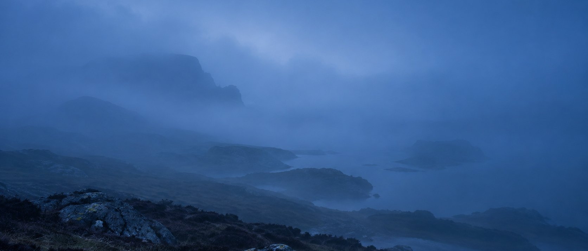
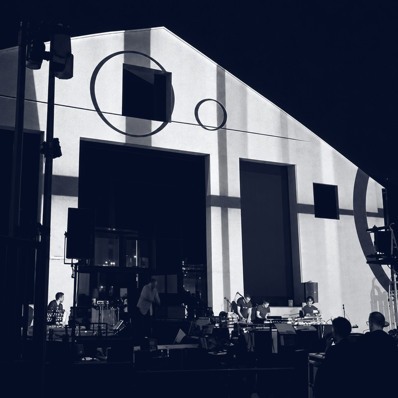
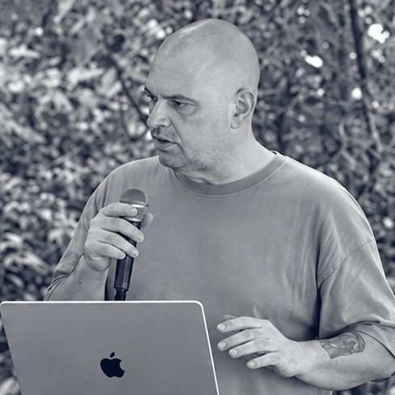
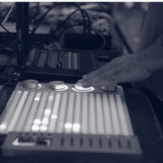
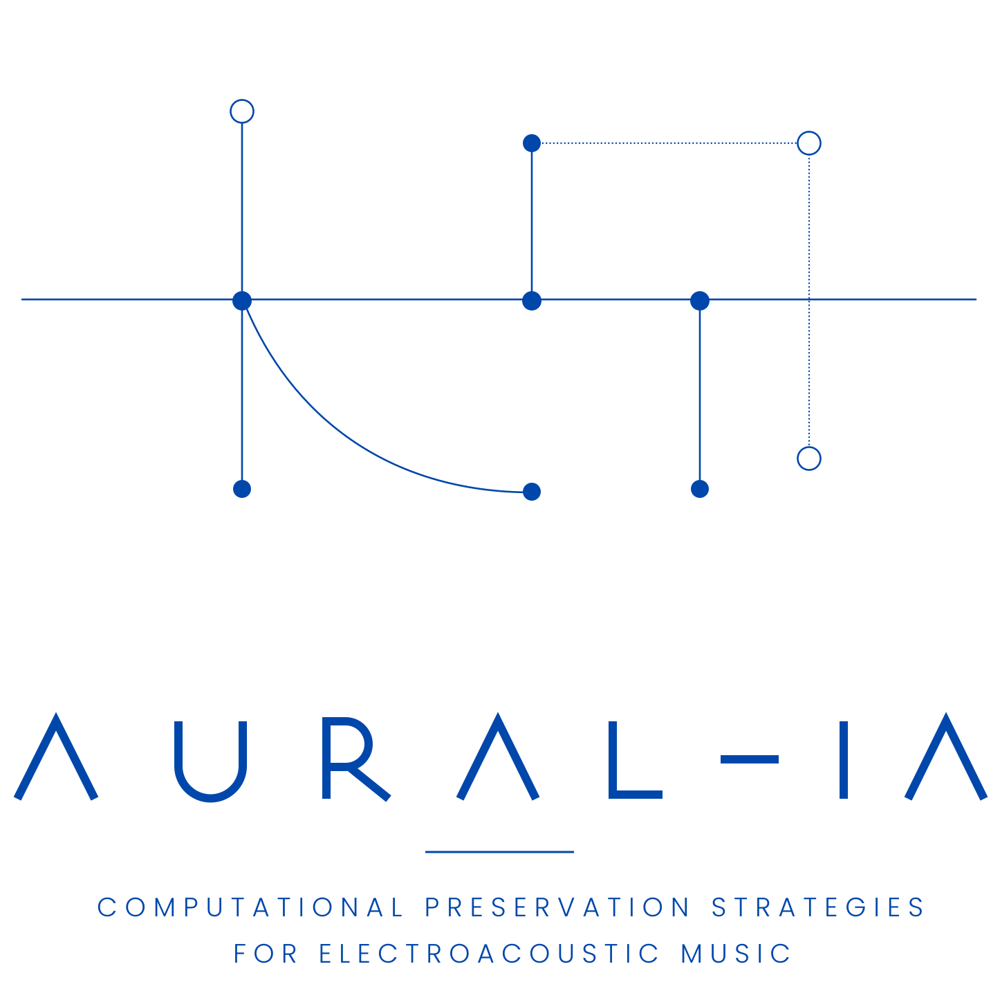

Computer Music Designer/Sound Designer/Sound Engineer
Giovanni Roma
Working across audio engineering, live electronics and sound design for over thirty years, between the studio, the concert hall and the research laboratory.
Doctoral researcher, Conservatorio «Domenico Cimarosa», Avellino — AFAM doctoral programme, XL cycle

Work
Computer Music Designer
Realization of electroacoustic works and live electronics in collaboration with composers and performers, including spatialization and the design of custom interfaces and software environments.
Sound Designer
Composition and sound design for instruments, electronics and installations. Second-level Academic Diploma in Electronic Music (equivalent to a Master’s degree), 110/110 cum laude.
Sound Engineer
Mastering and audio engineering for third-party clients since 1996, on material of every kind and genre, with some thirty years of professional experience. Taught music post-production in professional schools (2014–2022).
Selected images



Selected projects
Computer music & live electronics
- 2023–
Interferenze, Conservatorio «D. Cimarosa». Continuous work on the research and concert series: sound direction, algorithmic programming and technical coordination of the productions.
- 2022–
AuraLE. A system for guided collective electroacoustic improvisation, developed at the Conservatorio and used in concerts and performances since 2022.
- 2021–
Electroacoustic Ensemble of the Conservatorio «D. Cimarosa». Electronic instrument building, algorithmic programming and live-electronics performance.
Installations & sound design
- 2025–
Ecosistemi Sonori, PRIN AFAM 2024. Design of the sound-diffusion system and of the sound-generation algorithms for an immersive sound garden.
- 2024
Trust. Audiovisual installation, designed and built for FuturoRemoto, Museo Irpino, Avellino.
Composition
- 2022–2023
El Aleph, for piano and live electronics in quadraphony. Presented at the Festival del Barocco, Museo Archeologico Nazionale, Naples (2023).
- 2022
PANopticon, collective composition for saxophone and four electronics performers, for the Electroacoustic Ensemble of the Conservatorio.
Publications
- 2026
G. Roma, A. F. Battista, “Supervised Memory: How Machines Can Preserve What We Cannot Hold”, International Computer Music Conference (ICMC 2026), Hamburg.
- 2026
G. Roma, A. F. Battista, “A Modular Annotation Toolset for Electroacoustic Score Preservation: Typology, Strategy and the Case for Procedural Standards”, ICAIHE 2026, Springer LNCS.
- 2026
G. Roma, A. F. Battista, “From Object to Relation: Annotating Semantic Instability in Stockhausen’s Solo (Nr. 19)”, XXV Colloquio di Informatica Musicale (CIM 2026).
Mastering
- 2019–2025
Mastering, mixing and editing for national and international releases on labels including Sony Music, BMG, Columbia, Elefant Records, peermusic and Artist First, with gold and platinum certified credits.
Research

Aural-IA
My doctoral project investigates computational strategies for the preservation of electroacoustic music: works whose technological apparatus ages faster than the score that documents them, and which therefore call for methods of reconstruction, documentation and transmission suited to their nature.
Case studies draw on works by Harvey, Stockhausen and Boulez; the methods combine supervised geometric annotation of scores, human-in-the-loop workflows and retrieval-augmented generation.
Contact
For collaborations, teaching engagements and enquiries.